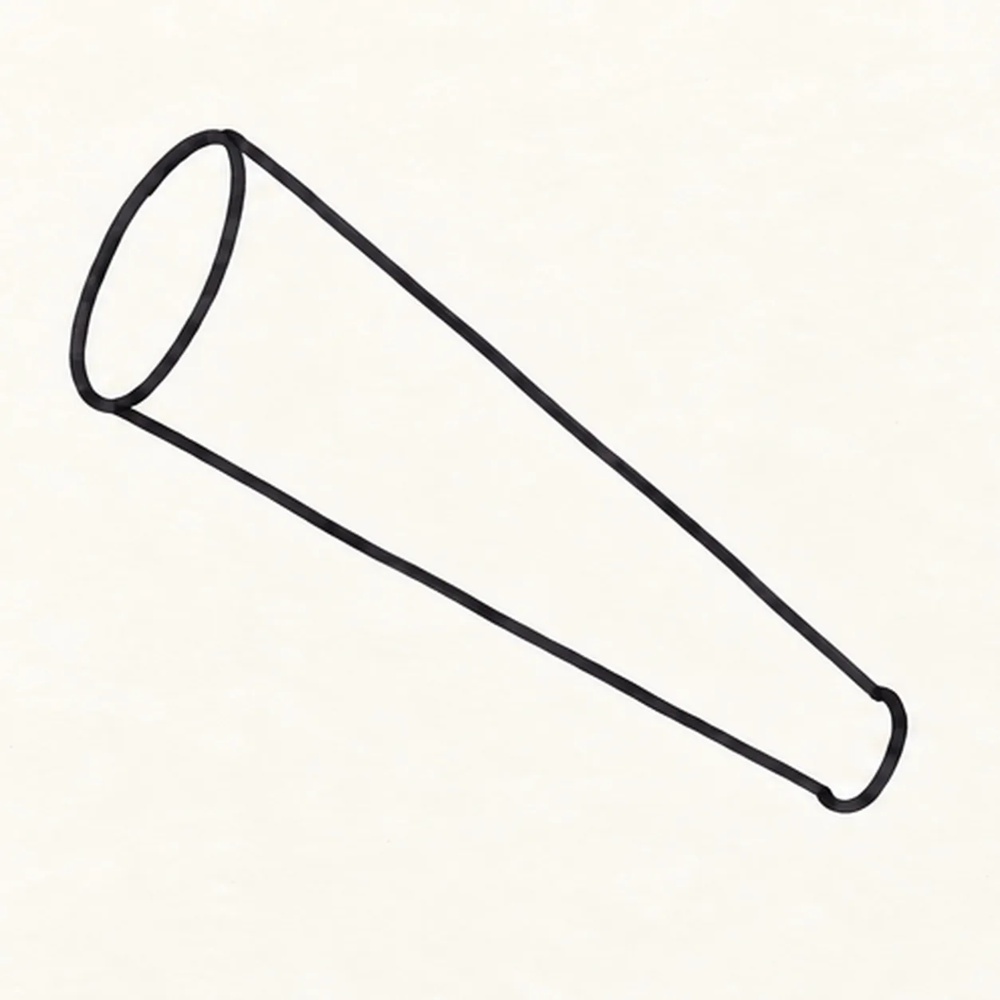
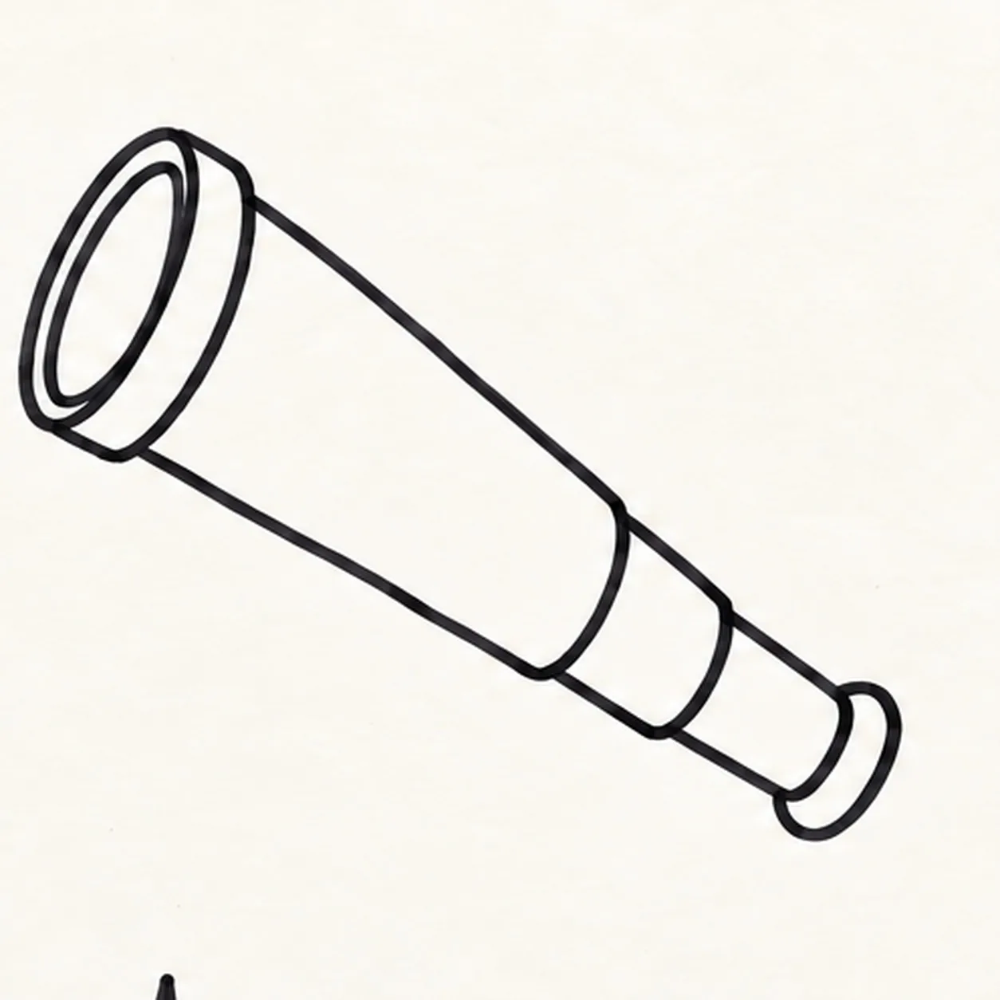
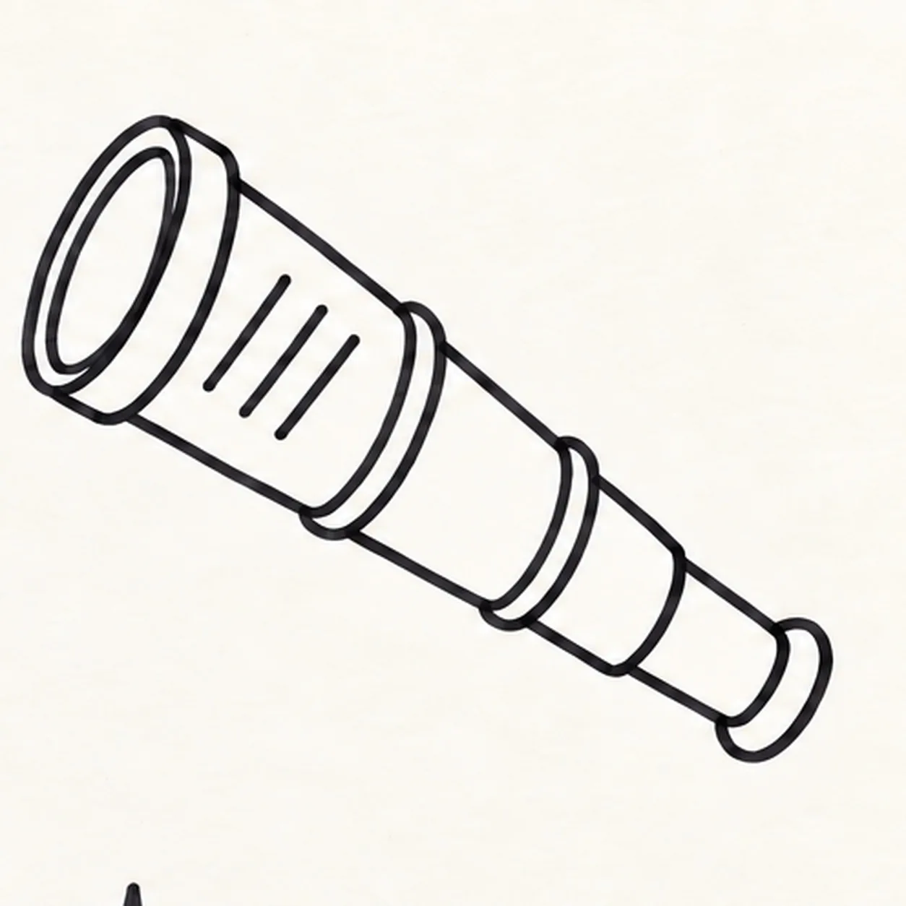
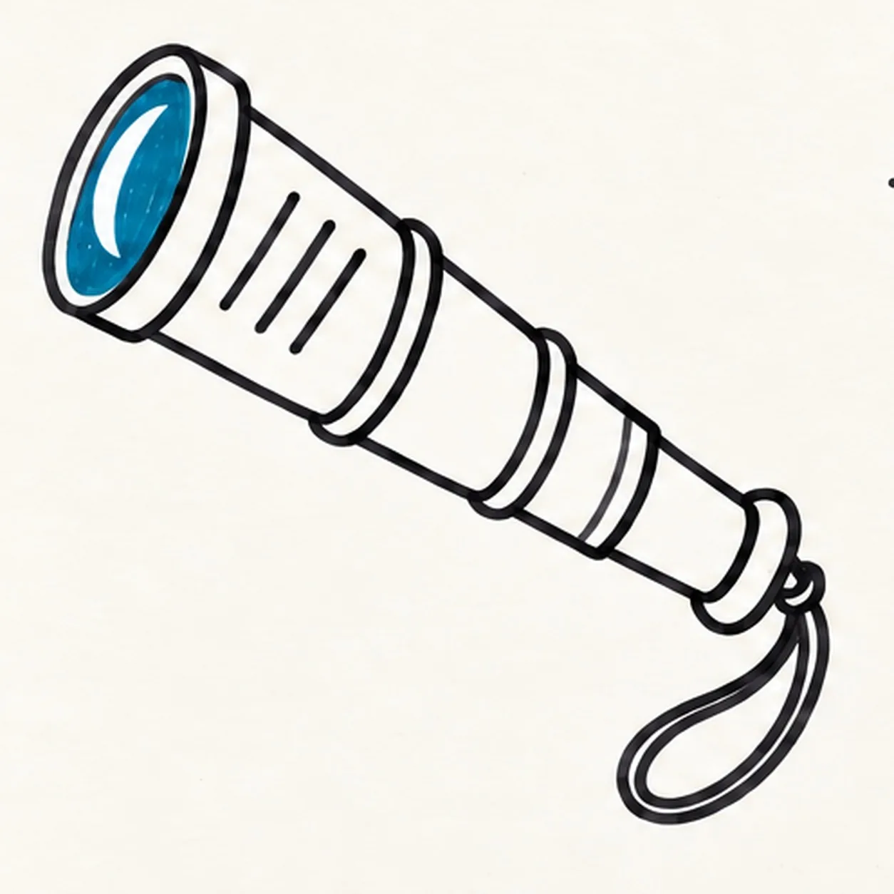
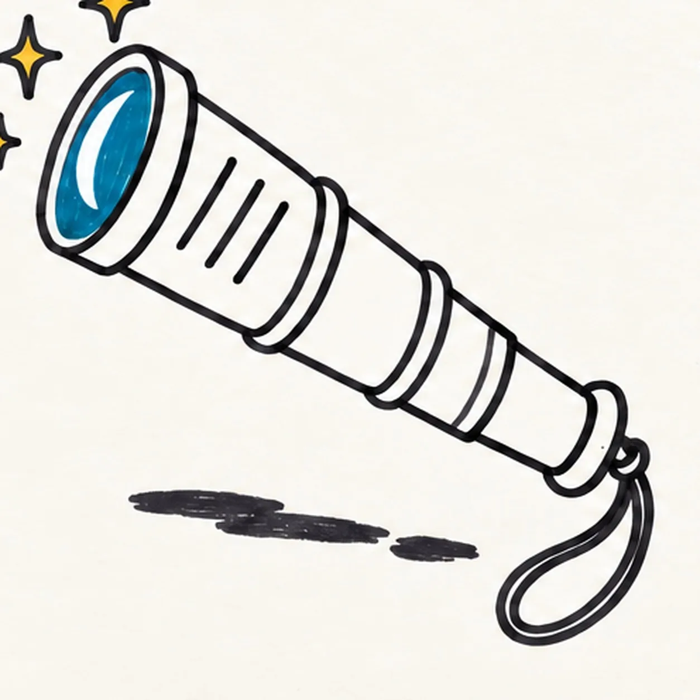

Felt-tip marker mode
Let's draw a pirate spyglass
Treat this as one playful practice round: sketch the idea loosely, simplify the shapes, then commit with confident marker outlines and bright fills.
-
01

Shape the spyglass barrel
Pull two long slightly bowed lines from a wide opening at the upper left toward a narrower opening at the lower right, then join each opening with a shallow oval curve.
Marker tip: Ghost both long edges before touching down. Keep the end curves in the same angle family so the barrel reads as one tapered cylinder.
-
02

Extend the lens and tubes
Echo the wide front oval to make one thick lens ring. From the narrow rear opening, attach exactly two shorter narrowing tubes in the same diagonal, then cap them with one small rounded eyepiece.
Marker tip: Work from wide to narrow and trace each attachment with your finger. Count two rear tube sections before closing the eyepiece.
-
03

Collar and wrap the grip
Curve exactly two narrow collars across the barrel and tube joints behind the front lens ring. On the main barrel, place exactly three short diagonal stripes with open paper between them.
Marker tip: Rotate the page so each collar follows its nearby oval end. Count two collars and three grip stripes before darkening the marks.
-
04

Tie on the wrist loop and shine
From the eyepiece base, pull one cord into a single open loop and close it with one small knot. Fill the lens deep aqua around one white crescent, reserve exactly two narrow hardware highlights, and place exactly three small golden four-point sparkles around the lens.
Marker tip: Draw the loop in one relaxed pass and close it at the same knot. Color around the crescent and two highlight gaps instead of trying to add white after the marker dries.
-
05

Ground the spyglass
Sweep one broad deep-navy shadow beneath the spyglass as three loose marker patches. Leave paper gaps between the patches and keep the wrist loop, aqua lens, white crescent, two highlights, and three golden sparkles unchanged.
Marker tip: Pull the three shadow patches in the spyglass direction. Keep their edges broken and stop well before the wrist loop.
-
06
![Handmade face-free felt-tip marker drawing of one pirate spyglass tilted from lower right toward upper left with one coral tapered main barrel, exactly three black diagonal grip stripes, one wide golden-yellow front lens ring, one deep-aqua lens with one large open-paper crescent reflection, exactly two teal telescoping rear tubes, exactly two golden-yellow joint collars, one rounded teal eyepiece, one deep-navy wrist cord attached with one knot and forming one open loop, exactly three golden-yellow four-point sparkle bursts, exactly two open-paper hardware highlights, thick imperfect black outlines, visible marker streaks, and one broken deep-navy shadow made from three loose patches](../assets/cartoon-pirate-spyglass-finished-v1.webp)
Color the lookout finish
Fill the main barrel coral, both rear tubes teal, and the front lens ring plus two joint collars golden yellow. Deepen the established navy cord and shadow, leave the aqua lens, white crescent, two hardware highlights, and three golden sparkles unchanged, and add no new shapes.
Marker tip: Fill from each black edge inward so the marker streaks follow the long tube direction. Count three grip stripes, two collars, two tubes, two highlights, and three sparkles, then stop while the paper texture still shows.
![Handmade face-free felt-tip marker drawing of exactly two crossed garden gloves with one coral foreground glove leaning left, one teal rear glove leaning right, four rounded fingers and one thumb on each glove, one curved palm reinforcement panel per glove, two golden-yellow cuff bands, exactly three black stitch dashes on the foreground cuff and two visible dashes on the partly covered rear cuff, exactly two open-paper curved highlights, one separate bright-green pointed leaf with a dark branching vein pattern, thick imperfect black outlines, visible marker streaks, and one broken deep-navy ground shadow](../assets/cartoon-garden-gloves-with-leaf-finished-v1.webp)
![Handmade face-free felt-tip marker drawing of one front-facing teal laundry basket with exactly two oval side handles, three broad horizontal weave rows, four aligned vertical divider routes, one coral sock and one golden-yellow sock draped over the rear rim with exactly three deep-navy curved stripes each, one violet folded towel between them with one dark stitched edge, exactly two open-paper highlights on the lower basket front, thick imperfect black outlines, visible marker streaks, and one broken deep-navy ground shadow](../assets/cartoon-laundry-basket-with-striped-socks-finished-v1.webp)
![Handmade felt-tip marker drawing of one cheerful cartoon sea turtle swimming toward the upper right with one teal head and curved neck, one tiny open coral diamond mouth, one large almond side eye with a high pupil, one raised curved brow, one domed shell with a deep-navy rim and exactly five large scutes colored coral and golden yellow, exactly four attached teal flippers with dark seams and navy spots, one small pointed tail, exactly three aqua bubbles, exactly two aqua water swooshes, exactly two open-paper shell highlights, thick imperfect black outlines, and visible directional marker texture](../assets/cartoon-sea-turtle-swimming-finished-v1.webp)